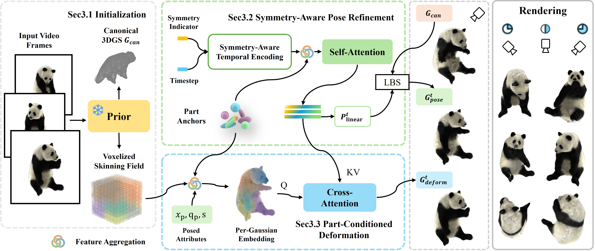

Abstract
Reconstructing 4D animals from monocular videos is challenging due to large inter-species variation, complex articulations, and the lack of reliable templates. Existing approaches typically rely on either strict category-specific priors that restrict generalization, or unconstrained generative models that sacrifice input fidelity. To bridge this gap, we present a progressive test-time optimization framework built on 3D Gaussian Splatting for high-fidelity 4D animal reconstruction from a single video. Our key insight is that a coarse shape prior suffices when coupled with a progressive strategy that disentangles articulated pose from non-rigid deformation. Specifically, we employ a symmetry-aware temporal encoding that exploits bilateral cues while absorbing camera estimation drift and a part-conditioned deformation mechanism guided by learnable part anchors and a learnable skinning field. Extensive experiments demonstrate that our approach generalizes robustly across diverse species, achieving superior geometric accuracy, temporal consistency, and visual fidelity compared to existing baselines, even under severe prior mismatch.
Method Overview

Results Gallery
Comparison
Application
Limitations
BibTeX
@misc{li2026progressiveposeguided4danimal,
title={Progressive Pose-Guided 4D Animal Reconstruction from Monocular Video},
author={Siyuan Li and Weiying Chen and Yilin Wang and Xinxin Zuo and Xingyu Li and Li Cheng},
year={2026},
eprint={2607.00157},
archivePrefix={arXiv},
primaryClass={cs.CV},
url={https://arxiv.org/abs/2607.00157}
}